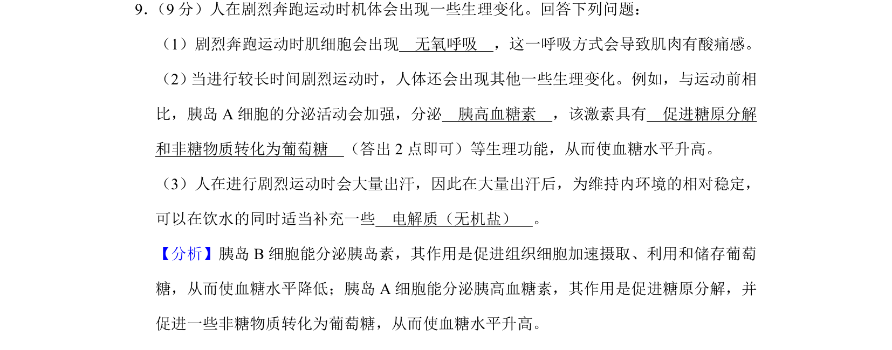
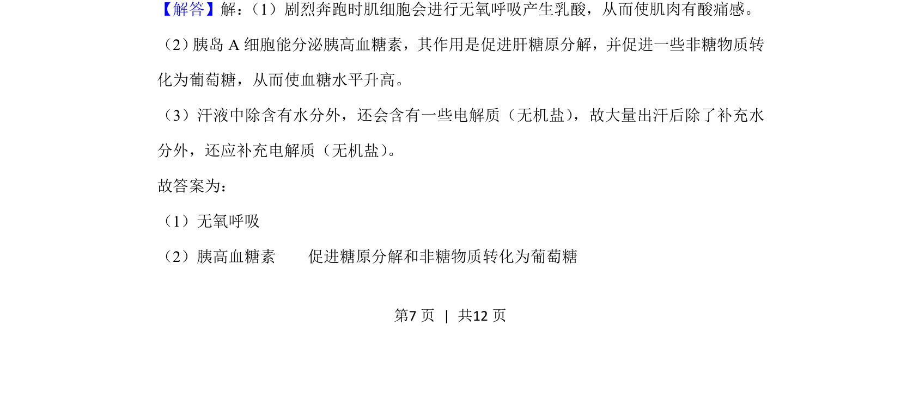
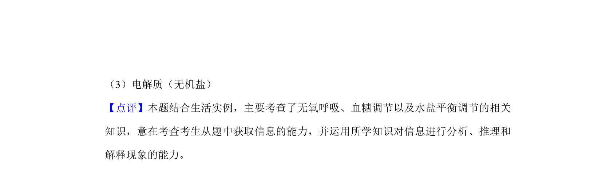

考点：无氧呼吸 胰高血糖素 血糖调节 无机盐补充

本题考查剧烈运动时的无氧呼吸、血糖调节及水盐平衡补充。


📄 原 PDF 第 7 页：
素材/真题/吉林/2008-2024·（吉林）生物高考真题/2020年高考生物试卷（新课标Ⅱ）（解析卷）.pdf
9． （9分）人在剧烈奔跑运动时机体会出现一些生理变化。回答下列问题： （1）剧烈奔跑运动时肌细胞会出现 无氧呼吸 ，这一呼吸方式会导致肌肉有酸痛感。 （2） 当进行较长时间剧烈运动时，人体还会出现其他一些生理变化。例如，与运动前相 比，胰岛A细胞的分泌活动会加强，分泌 胰高血糖素 ，该激素具有 促进糖原分解 和非糖物质转化为葡萄糖 （答出2点即可）等生理功能，从而使血糖水平升高。 （3）人在进行剧烈运动时会大量出汗，因此在大量出汗后，为维持内环境的相对稳定， 可以在饮水的同时适当补充一些 电解质（无机盐） 。
【分析】胰岛B细胞能分泌胰岛素，其作用是促进组织细胞加速摄取、利用和储存葡萄 糖，从而使血糖水平降低；胰岛A细胞能分泌胰高血糖素，其作用是促进糖原分解，并 促进一些非糖物质转化为葡萄糖，从而使血糖水平升高。 【解答】解： （1）剧烈奔跑时肌细胞会进行无氧呼吸产生乳酸，从而使肌肉有酸痛感。 （2） 胰岛A细胞能分泌胰高血糖素，其作用是促进肝糖原分解，并促进一些非糖物质转 化为葡萄糖，从而使血糖水平升高。 （3）汗液中除含有水分外，还会含有一些电解质（无机盐） ，故大量出汗后除了补充水 分外，还应补充电解质（无机盐） 。 故答案为： （1）无氧呼吸 （2）胰高血糖素 促进糖原分解和非糖物质转化为葡萄糖